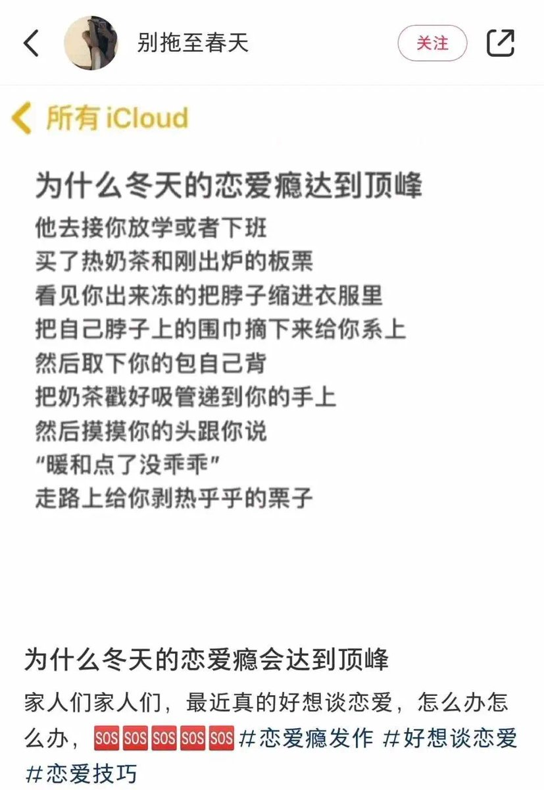

小虚空🍥
@tokerumaisurii
@isaac_eins 刷到这个其实瘾没那么大，因为我没那么容易冻成这样，也害怕害别人帮自己拿东西，大冬天的手放外边不揣兜里会很冻容易受伤，所以剥栗子还是算了。就是说感觉有点腻歪过头。相比之下两个人普通地见面一起散步说话去买奶茶一起喝着回家互相摸摸头我就很满意了。

Isaac Einstein赶得上车但是不要小交路啊！！！
@isaac_eins
本来是没恋爱瘾的，直到我刷到：
我单方面拉黑小红书24h😡 https://t.co/BDTrw5kvsc